01
Logo completo
Símbolo y nombre juntos para la identidad principal.
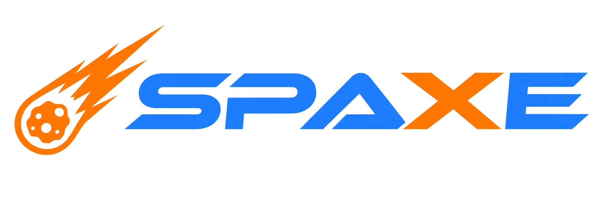
API de Cohetes - Branding
Símbolo y nombre juntos para la identidad principal.
El meteorito como símbolo reconocible y autónomo.
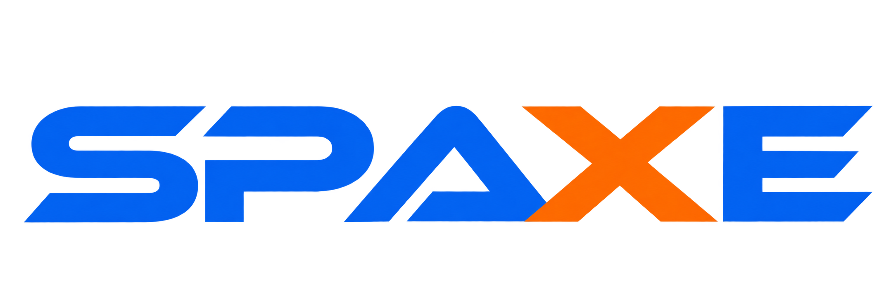
El nombre tipográfico para espacios reducidos.
Una ilustración convertida en símbolo
La ilustración de Spaxe nace de la historia de la exploración espacial y de los cohetes que han marcado momentos decisivos para la humanidad, desde los primeros lanzamientos hasta la llegada a la Luna. Su forma dinámica transforma esa inspiración en un símbolo fácilmente reconocible, capaz de comunicar movimiento, descubrimiento y el deseo de alcanzar nuevas fronteras.
Conserva un espacio libre alrededor del logo para mantener su fuerza y legibilidad.
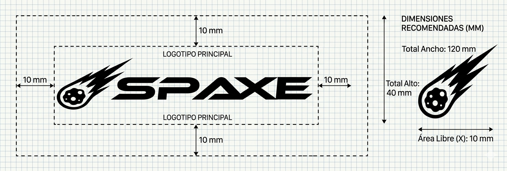
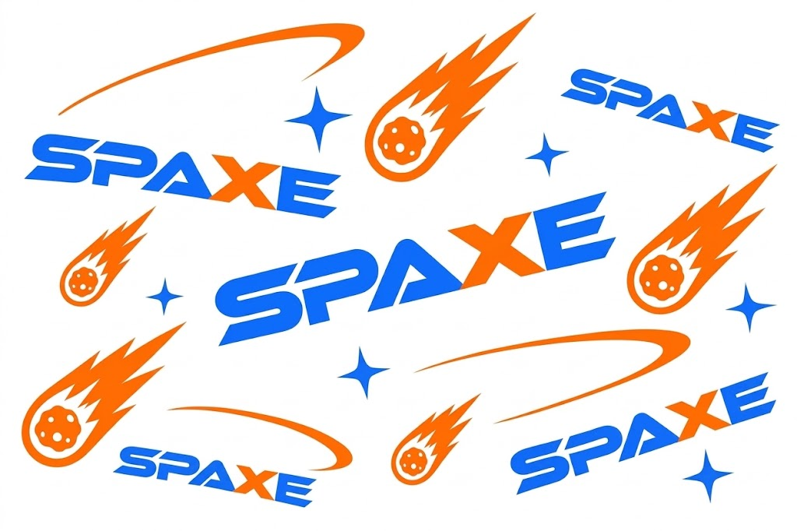
El logo permite reconocer la identidad visual de los cohetes presentados en la API de Spaxe.
Simboliza la imaginación que impulsa cada cohete.
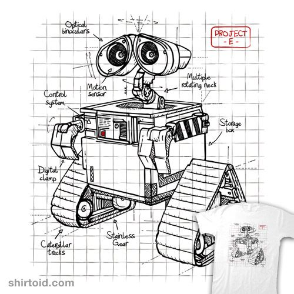
Representa la precisión detrás de cada lanzamiento.
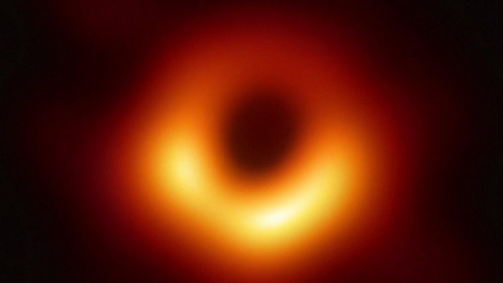
Resalta la exploración de nuevos horizontes.
La combinación de naranja y azul comunica energía, innovación y confianza desde el primer contacto con Spaxe.
Qué transmite: energía, movimiento y exploración. Ayuda a que las acciones importantes destaquen para el usuario.
Qué transmite: confianza, tecnología y seguridad. Refuerza la percepción profesional de la API.
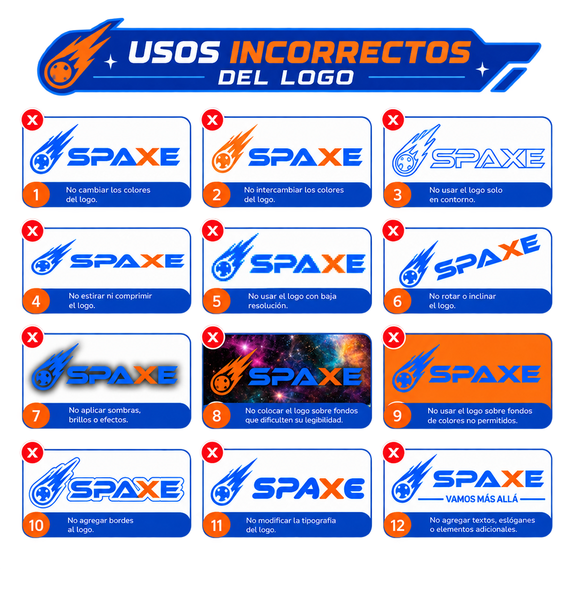
El logo conserva su reconocimiento tanto sobre fondos claros como oscuros.
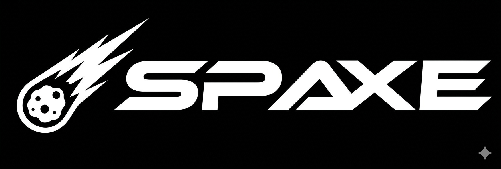
Para fondos claros y superficies luminosas.
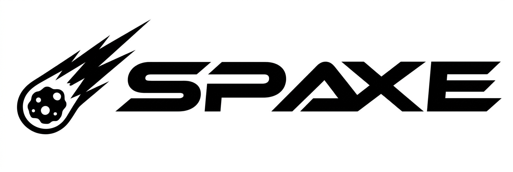
Para fondos oscuros y espacios de alto contraste.
Aplicaciones visuales de la identidad Spaxe en distintos formatos.
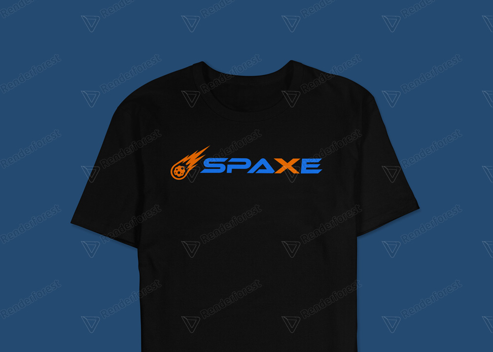
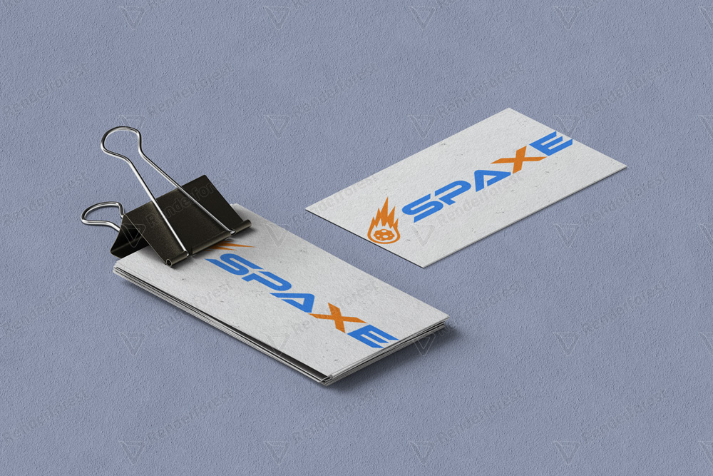
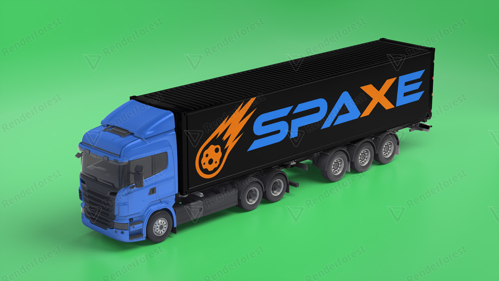
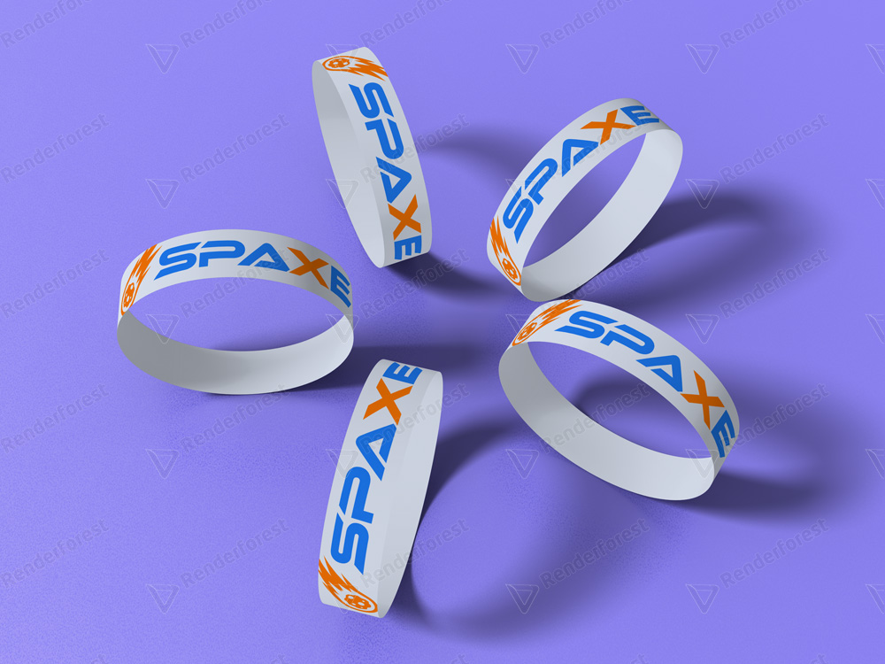
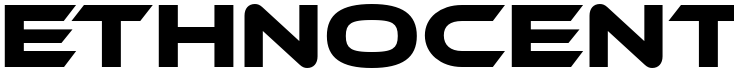
.png)
Ethnocentric acompaña al logotipo porque sus formas geométricas y angulares recuerdan a la precisión de una nave y a la exploración del espacio.
Para el usuario o cliente, esta tipografía comunica innovación, velocidad y confianza. Se recomienda usarla en títulos y mensajes destacados para mantener una identidad fuerte y reconocible.
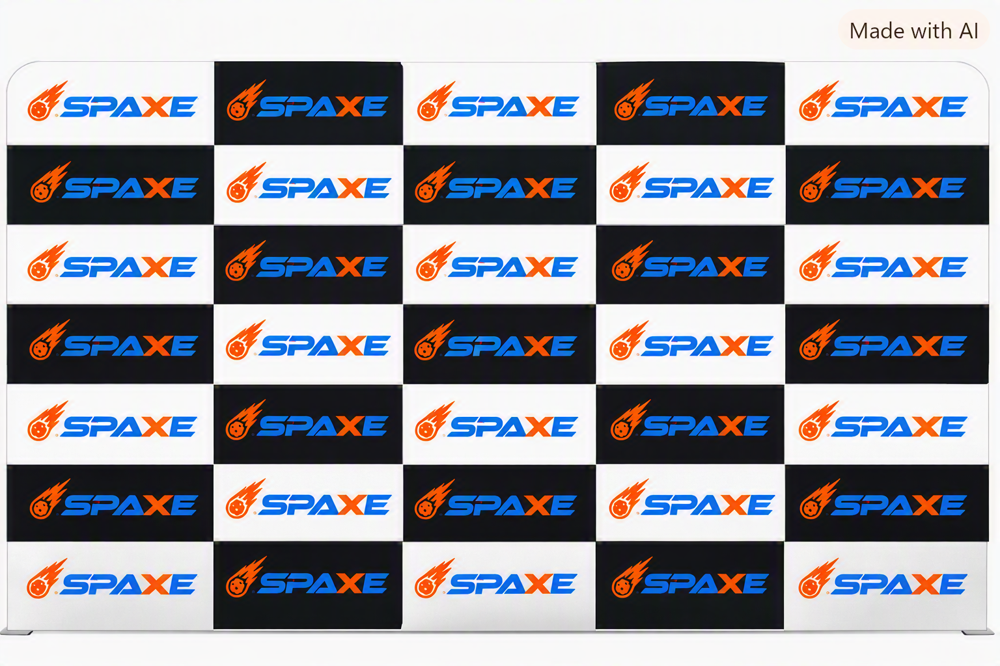
Logo Spaxe
Descargar PNG{kind=link}